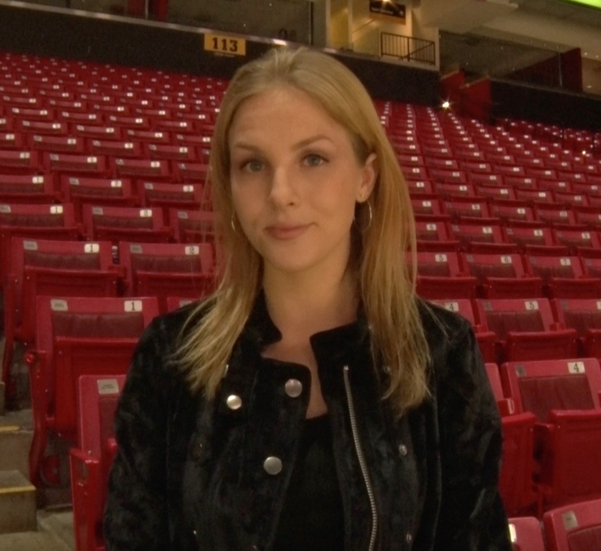

Journalism studentSideline reporting coverage for all Summer 2021 home games for the Wareham Gatemen baseball team. I interview the players, coaches, and managers throughout the game and have postgame interviews as well.
Operate the broadcast cameras for all sports covered by the Big Ten Network at the University of Maryland. I help with set up, operation, and post game takedown of all cameras and equipment.
Co-Director of video for a student run non-profit that tells student-athlete’s stories. Compose podcast and video content, along with reaching out to athletes and coaches to schedule interviews.
Sideline and package reporter for the student run sports news organization. Has also anchored the bi-weekly news show.